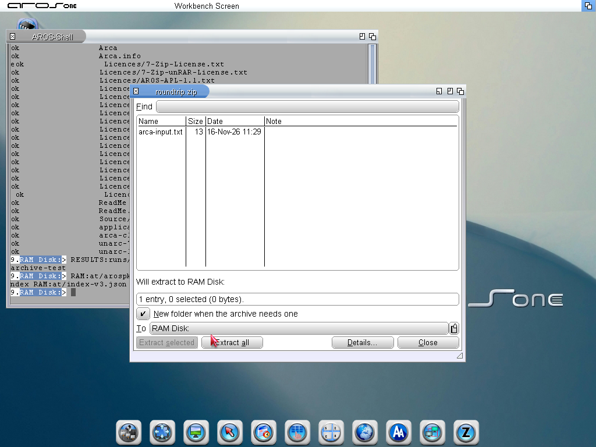

Arca creates, browses and extracts archives on AROS. Drop files to pack them, open an archive to see what is inside, or drag selected entries straight to Wanderer.
Open an archive to inspect its contents before extracting. Select individual entries, or extract everything.
Drag selected entries from the browser onto an open Wanderer drawer to extract them there. Amiga+A selects the whole list.
For several archives, drop them together. Arca processes the queue one archive at a time and shows a combined summary when it finishes.

Browsing a ZIP archive on AROS One
PASSWORDS / MULTIPART ARCHIVES
Open protected archives and volume sets.
The included 7-Zip helper reads encrypted ZIP, 7z and RAR archives, including ZIP files using ZipCrypto or AES.
01 / PASSWORDS
A password when it is needed
Arca asks before extraction starts. If the archive hides its file list too, it asks when you open it. Passwords are never saved or logged.
The Shell command can prompt without showing what you type, or accept PASSWORD in a script.
02 / VOLUMES
Open any part of a set
Read split 7z and RAR sets such as name.7z.001, name.part1.rar and name.rar with name.r00.
Arca checks the set before writing files. If a volume is missing, the message names it.
Passwords and multipart support apply to reading archives. Arca does not create encrypted archives or split archives into volumes.
EXISTING FILES / AMIGA METADATA
Choose what happens to your files.
When an extracted file already exists, Arca shows its name, location, sizes and dates so you can decide what to keep.
CONFLICTS
Skip, replace or keep both
Return skips an existing file. Replacing it needs an explicit choice. Preferences can skip conflicts or keep both files automatically.
CANCELLATION
Stop a job in progress
Cancelling extraction keeps completed files and removes the file in progress. Cancelling packing removes the unfinished archive. An existing archive stays in place until its replacement is complete.
AMIGA DETAILS
Keep comments and dates
LhA creation stores Amiga comments, protection bits, dates to the second and empty drawers. Extraction preserves the Amiga comments and protection bits held in LhA and LZX archives.
PREFERENCES / EVERYDAY USE
Set up your archive workflow.
Choose what happens when Arca starts or when you double-click an archive from Wanderer.
Extract beside the archive immediately, or open the browser first. Set the archive types’ default tool to Arca in Wanderer to use it from their icons.
Settings are saved in ENVARC:Arca.prefs. The package guide explains archive icons and the MODE=BROWSE tool type.
Startup window, double-click action, opening the result drawer and closing a successful result.
Packing
Save beside the items, ask each time or use a fixed drawer. Choose how several items are named.
Extracting
Destination, when to create a drawer, and whether existing files are skipped, kept alongside or brought to your attention.
Warnings and errors stay visible. The result summary has a Details view with paths and messages.
FORMAT SUPPORT
Amiga archives. And the usual formats.
Arca includes its archive engines and helpers. Both the desktop application and Shell command use them.
Supported archive operations
Format
Browse & extract
Create
Details
LhA / LZH
Yes
Yes
Amiga comments, protection bits, dates and empty drawers
ZIP / ZIP64
Yes
ZIP
Read ZipCrypto and AES encrypted archives
7z
Yes
Yes
Read encrypted archives and split volumes
tar.gz / TGZ
Yes
Yes
Compressed tar archives
RAR 1.5 to 5
Yes
No
Read encrypted archives and multipart sets
LZX
Yes
No
Amiga comments and protection bits
tar / tar.bz2 / tar.xz
Yes
No
Uncompressed and compressed tar archives
gzip / bzip2 / xz
Yes
No
Individual compressed files
ISO 9660
Yes
No
Browse and extract files from an image
DMS
List only
No
Disk images are listed, not written to a disk
Other formats may be recognized by libarchive or XAD. Run arca-cli FORMATS for the capabilities of the installed build.
FROM THE SHELL
The same tools in your scripts.
Use arca-cli to inspect an archive, extract to another drawer or create a backup.
HELP lists the options and examples. Ctrl-C stops a job; files already extracted stay in place. Return codes distinguish success, notes, a partial result and a failed operation.
AROS SHELL / arca-cli
# Inspect an archive
arca-cli archive.zip LIST
# Extract to a drawer
arca-cli archive.zip TO Work:Extracted
# Pack a backup
arca-cli Work:backup.zip PACK FILES Work:Documents FORMAT ZIP
# Show available operations
arca-cli FORMATS
ARCA 0.1.1 / AROS
Download Arca.
Choose the package for your architecture and ABI. PC ABIv1 and ABIv11 binaries are different.
Unpack the ZIP and keep the complete Arca drawer together, including its helpers. Start Arca from its icon. The native interface uses the system NList, NListview and NFloattext classes.
Older SFS versions cannot seek inside archive files larger than 2 GB. Keep archives below that size on those volumes, or use an existing split set. AROS filenames use ISO-8859-1; Arca maps names outside that character set and reports the changes. Stored links are not created. Large RAR jobs can be slower on ABIv11.